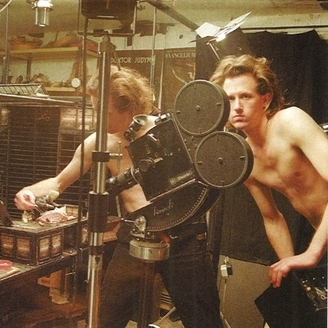

Animated Shorts
Mini Film Festival

Sunday, July 26
Snacks 7pm onwards, films start 8pm
Showing a mix of animated shorts by Masaaki Yuasa, The Brothers Quay, Jan Svankmajer, Yuri Norstein, and more. Open to suggestions!
1082 Pennsylvania Ave #303
805 331 5513